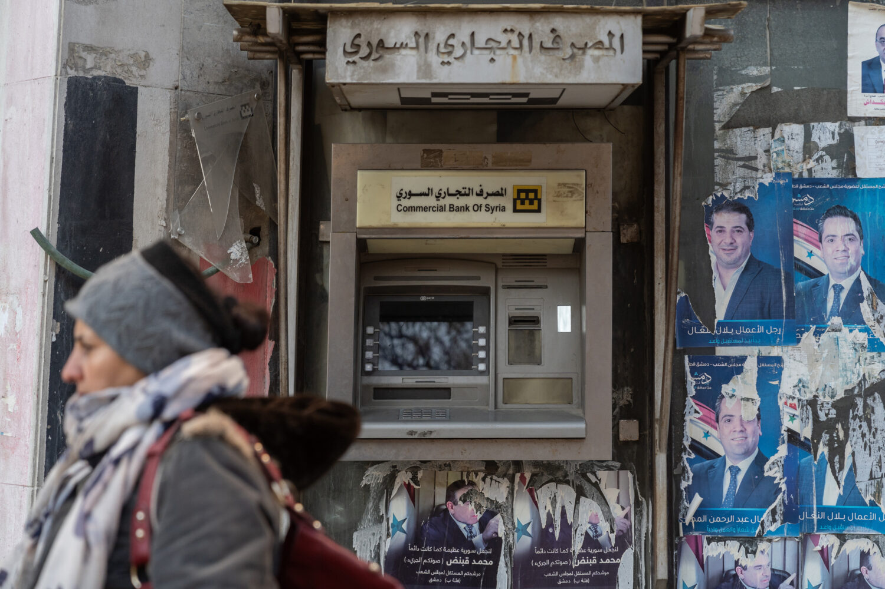

A Credit Strategy for Syria’s Reconstruction

Syria has received some of its best economic news since the fall of Bashar al-Assad’s regime at the end of 2024: the United States has begun the process of removing the country from its list of state sponsors of terrorism. The change should unlock investment from firms that had been interested in Syria but unwilling to assume the legal and reputational risks. Its effects may be felt most strongly in banking, where US institutions will face fewer obstacles to reconnecting with Syrian banks, restoring basic financial services, and expanding financing for reconstruction.
As the volume of credit expands, the onus is now on Syrian policymakers to ensure that it reaches beyond the narrow political and commercial networks that have generally dominated Syrian finance. That will require a credit strategy aimed at sectors and regions historically excluded from formal finance. Syria’s specialized state banks offer an imperfect but ready-made mechanism to do so. Properly reformed and governed, they can complement private and foreign banks by extending credit to borrowers and sectors that commercial finance will likely continue to overlook.
Publication format
External commentary